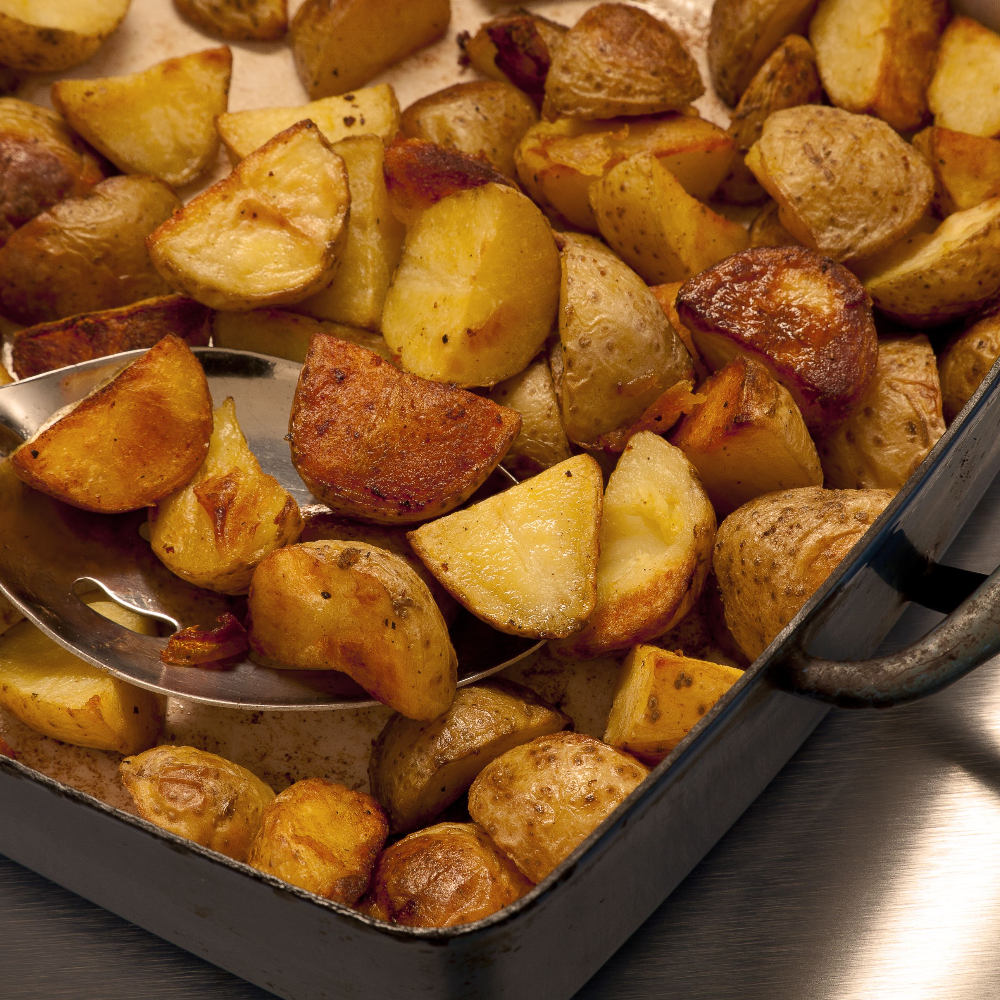

Boiled Egg

Description
Theres not much that can beat a well roasted spud
Ingredients
Steps
- wash and boil the potato for 10mins
- drain the potato
- add some oil in the pot and fry a bit
- transfer to a baking tray and put in oven at high temp
- take out of the oven when golden and crisp, and then allow to cool